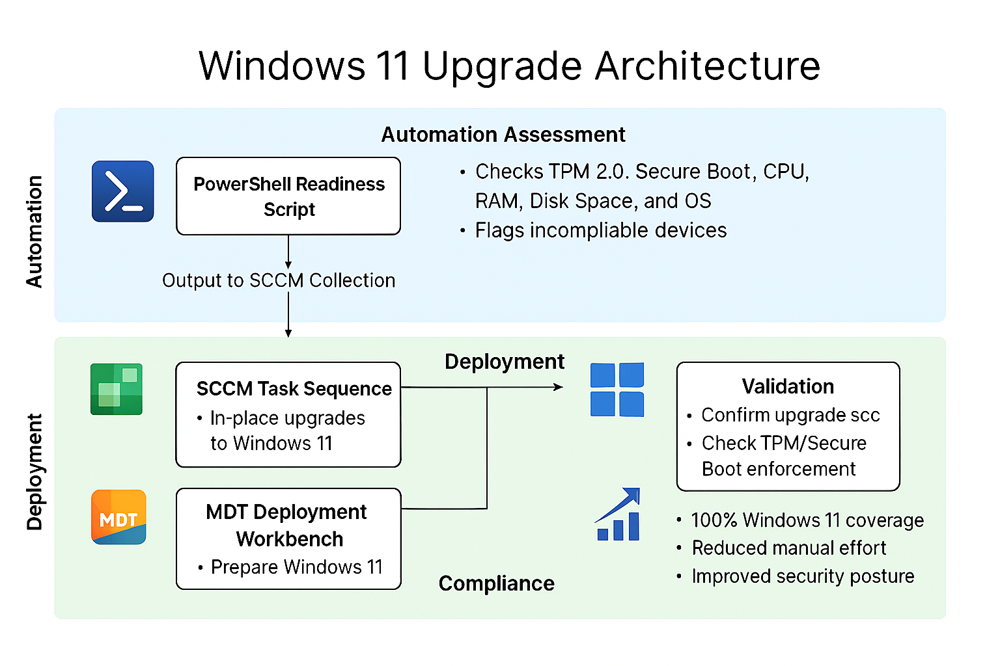

Challenge
With a mixed fleet of devices ranging from 2019 to 2025, our organization needed a scalable and compliant strategy to upgrade all endpoints to Windows 11. Compatibility varied widely, and manual validation was not feasible across hundreds of machines.
Tools & Technologies
- PowerShell (Upgrade Readiness Script)
- System Center Configuration Manager (SCCM)
- Microsoft Deployment Toolkit (MDT)
- Windows 11 ISO & Task Sequences
- Deployment Workbench
Implementation
- Developed a PowerShell script to assess upgrade readiness across all endpoints
- Flagged incompatible devices based on TPM, CPU, Secure Boot, and RAM requirements
- Assigned SCCM task sequence deployments to compatible devices for in-place upgrade
- Created a Windows 11 image in MDT for new device provisioning
- Integrated MDT with SCCM Deployment Workbench for seamless rollout
- Validated post-upgrade compliance and performance benchmarks
Readiness Script
To automate upgrade eligibility checks, I developed a PowerShell script that evaluates TPM, Secure Boot, CPU architecture, RAM, disk space, and OS version. This sample script was used to flag incompatible devices and streamline SCCM targeting:
function Test-Windows11Readiness {
Write-Host "Checking Windows 11 upgrade readiness..." -ForegroundColor Cyan
$results = @{}
$osVersion = (Get-CimInstance Win32_OperatingSystem).Version
$results.OSVersion = $osVersion
$results.OSCompatible = ($osVersion -ge "10.0.19041")
$cpu = Get-CimInstance Win32_Processor
$results.CPUArchitecture = $cpu.AddressWidth
$results.CPUCompatible = ($cpu.AddressWidth -eq 64)
$ramGB = [math]::Round((Get-CimInstance Win32_ComputerSystem).TotalPhysicalMemory / 1GB, 2)
$results.RAM = "$ramGB GB"
$results.RAMCompatible = ($ramGB -ge 4)
try {
$tpm = Get-WmiObject -Namespace "Root\CIMv2\Security\MicrosoftTpm" -Class Win32_Tpm
$results.TPMPresent = $tpm.IsActivated_InitialValue
$results.TPMCompatible = $tpm.SpecVersion -like "*2.0*"
} catch {
$results.TPMPresent = $false
$results.TPMCompatible = $false
}
try {
$secureBoot = Confirm-SecureBootUEFI
$results.SecureBootEnabled = $secureBoot
} catch {
$results.SecureBootEnabled = $false
}
$disk = Get-CimInstance Win32_LogicalDisk -Filter "DeviceID='C:'"
$freeSpaceGB = [math]::Round($disk.FreeSpace / 1GB, 2)
$results.FreeSpace = "$freeSpaceGB GB"
$results.DiskCompatible = ($freeSpaceGB -ge 64)
$results.ReadyForUpgrade = ($results.OSCompatible -and $results.CPUCompatible -and $results.RAMCompatible -and $results.TPMCompatible -and $results.SecureBootEnabled -and $results.DiskCompatible)
return $results
}
$readiness = Test-Windows11Readiness
$readiness | Format-List
Upgrade Flow Diagram
Impact
- Achieved 100% Windows 11 compliance across all eligible devices
- Reduced manual upgrade effort by over 90% through automation
- Improved endpoint security posture with TPM and Secure Boot enforcement
- Streamlined provisioning for new hires with pre-imaged Windows 11 devices